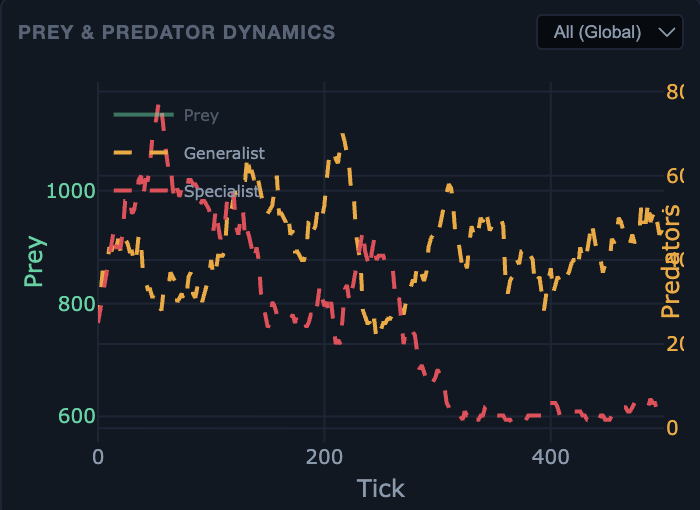
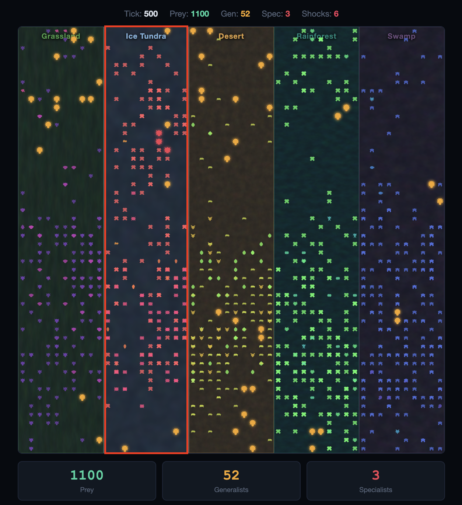
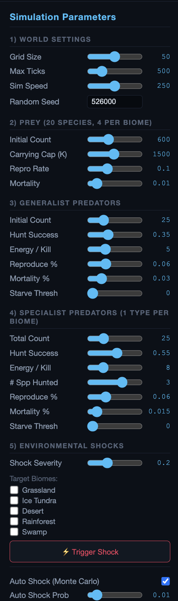
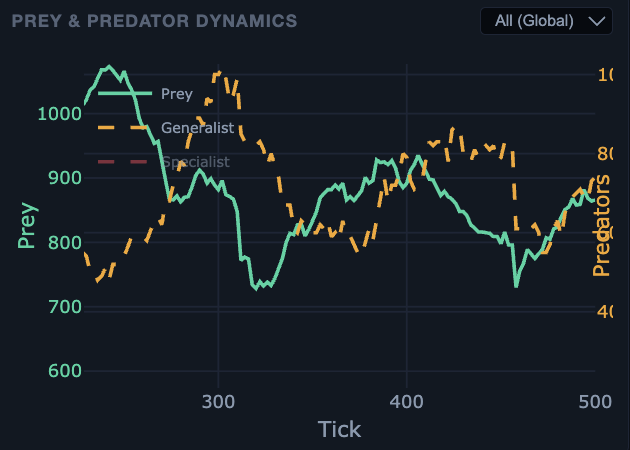
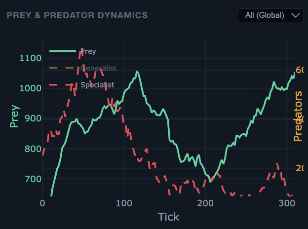
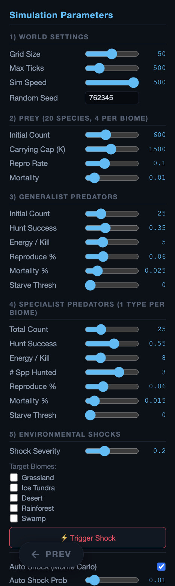
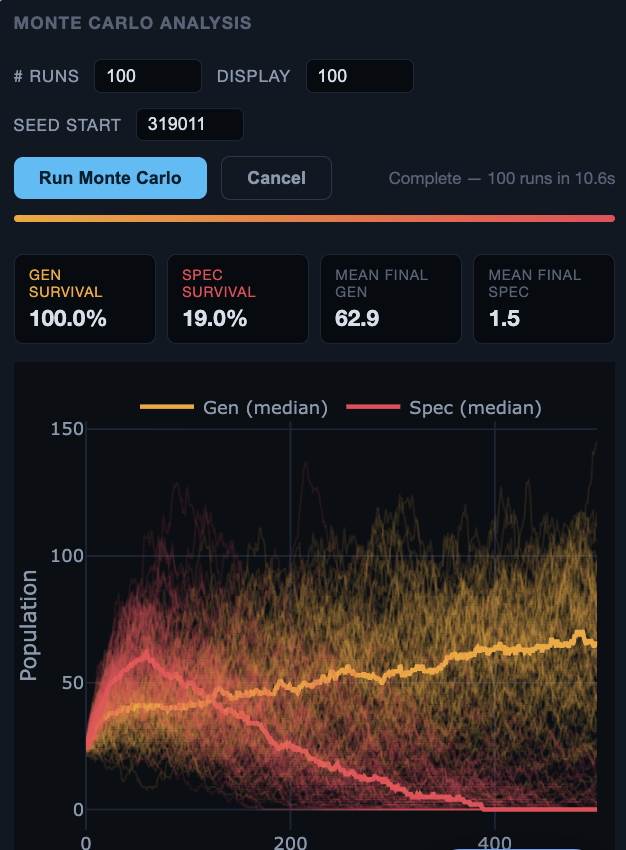

Output Analysis
Ecosystem ABM — Generalists vs Specialists · Project 16
40.015 Simulation Modeling & Analysis
We analyse the simulation output across three perspectives: the survival dynamics of specialist vs generalist predators under varying parameters, the emergence of classical Lotka–Volterra oscillation within the stochastic agent-based model, and finally a Monte Carlo analysis that confirms diversification as the dominant survival strategy — a finding that generalises across ecology, finance, and beyond.
Specialist vs Generalist Survival Dynamics
Under default parameters, specialists initially boom. Their higher hunt success rate (0.55 vs 0.35 for generalists) and greater energy gain per kill (8 vs 5) give them an early population surge — they outperform generalists in the opening ticks of every simulation run.

However, this advantage is short-lived. Once environmental shocks begin hitting individual biomes, specialists — locked to a single biome and a restricted diet — are devastated. They typically go extinct, or at best cling on in a single unshocked biome. Generalists, by contrast, survive through all ticks and shocks because they move freely across biomes and exploit any available prey species.


Parameter Sensitivity — What happens when we change key variables?
To investigate the robustness of this finding, we systematically vary one parameter at a time while keeping others at their defaults. The table below summarises how specialist and generalist survival respond to changes in mortality rate, reproduction rate, and hunt success.
| Parameter Varied | Seed | Value | Specialist Outcome | Generalist Outcome |
|---|---|---|---|---|
| Specialist Mortality | 636649 | 0.030 | Extinct by ~tick 224 | Survives all 500 ticks |
| 695393 | 0.015 (default) | Extinct by ~tick 271 | Survives all 500 ticks | |
| 897206 | 0.005 | Extinct by ~tick 370 | Survives all 500 ticks | |
| Specialist Reproduction | 81966 | 0.03 | Extinct by ~tick 205 | Survives all 500 ticks |
| 38877 | 0.06 (default) | Extinct by ~tick 305 | Survives all 500 ticks | |
| 353311 | 0.09 | Extinct by ~tick 393 | Survives all 500 ticks | |
| Generalist Hunt Success | 136218 | 0.20 | Extinct by tick ~471 | Survives all 500 ticks |
| 300229 | 0.35 (default) | Extinct by tick ~213 | Survives all 500 ticks | |
| 0.50 | 380444 | Extinct by ticks ~498 | Survives (larger pop) |
Emergent Lotka–Volterra Oscillation
A remarkable emergent property of our agent-based model is that it faithfully reproduces the classical Lotka–Volterra delayed oscillation — despite being built from individual-level stochastic rules, not differential equations. We observe this in two distinct scenarios:
Case (a) — All specialists extinct: global dynamics
Once every specialist goes extinct (typically by tick 300–400), the system simplifies to generalists + prey across all five biomes. The generalist population stabilises because it can freely redistribute across biomes, exploiting whichever has the most abundant prey. The global dynamics resemble a noise-dampened predator–prey equilibrium — oscillations exist but are smoothed by the spatial averaging effect of cross-biome movement.

Case (b) — Single biome isolation: classic oscillation
When we zoom into a single biome and examine the specialist predator + local prey populations, the dynamics exhibit textbook Lotka–Volterra delayed oscillation:
- Prey population rises → specialist population rises (with a delay, as predators reproduce after feeding)
- Specialists overshoot → prey crashes due to over-predation
- Prey scarcity → specialist population crashes (starvation / natural mortality)
- Low predation pressure → prey recovers → cycle repeats


Monte Carlo Analysis — Diversification Wins
To move beyond single-run observations, we run a Monte Carlo analysis — repeating the simulation across many independent runs (varying random seeds), each with the same default parameters and 500 ticks. This allows us to compute survival probabilities and population distributions with statistical confidence.
The results are decisive. Across all runs, generalists survive in ~96–100% of simulations, while specialists survive in only ~24–30%. The median specialist trajectory collapses to zero by approximately tick 400, while the generalist median stabilises around 45 individuals.

Interpretation: Diversification as the Dominant Strategy
The mechanism behind generalist resilience is diversification. By feeding on multiple prey species across all five biomes, generalists spread their "risk" — when one biome is shocked, they relocate to unaffected biomes and continue hunting. Specialists, locked to a single biome, are making a concentrated bet that collapses under environmental stress.
This is not unique to ecology. The same mathematical structure — efficiency under stability vs resilience under volatility — recurs across many fields: